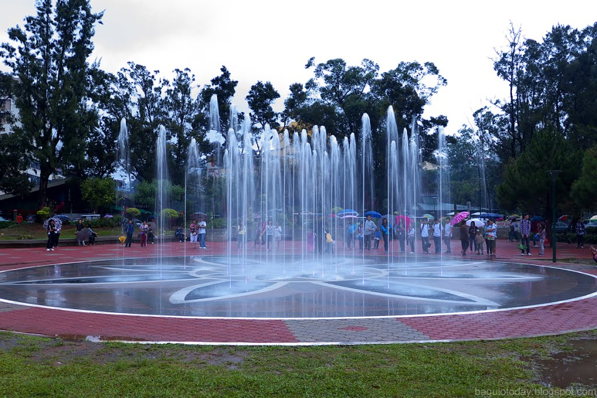

.
Different Reason To Visit Baguio City
It is the "Summer Capital of the Philippines"
Baguio is known as the summer capital of the Philippines because of its cool weather. At an altitude of 5100 feet, it is also known as the City of Pines. The name Baguio derives from the word “moss” in the Ibaloi langauge of the Benguet region. Baguio is a university town where the University of the Philippines has a campus and where the Philippine Military Academy, Saint Louis Unviersity, and other colleges and universities are located. Tourists visit Baguio to escape from the heat in the other parts of the country, especially in the summer. Camp John Hay is a former recreation area for American servicemen in the Philippines; it is also where Voice of America had its broadcasting facilities. Burnham Park and Baguio Cathedral are other tourist attractions in the city.
The people are courteous and naturally nice.
There’s just something about the people who live in Baguio. They’re naturally kind, warm and accommodating. The cab drivers are pleasant and won’t deny you a ride no matter what the traffic situation is or where you’re headed within the city. The ambiance is generally friendly and cheerful wherever you go in Baguio.
The scenery is just plain pretty all year round.
Baguio is blessed to have some of the most amazing and breathtaking spots that can be found in the country. Add to that the abundance of flowers that make the City of Pines colorful and lovely wherever you go. Baguio boasts flowers blooming throughout the year because of its great weather. Take the opportunity to literally stop and smell the flowers because you won’t get to do that the moment you return to Manila. If you want to see lush greenery and abundant flowers in full bloom, try visiting during the months of January-February. Wherever it is you go in Baguio, you know it’s a photo op waiting to happen.
It's the perfect place for those who just want to relax.
For families and friends who would rather spend several days relaxing in cool weather instead of lounging by the beach, Baguio is always the first choice of destination. There’s still so much to do in the city even if you’ve been around it several times already. You might even find yourself wanting to stay an extra day simply because you want to do more things.
.
Pasalubong
Pasalubong is one of my favorite topics here in Field Trip Boy. I guess Pasalubong shopping is also one of the most awaited part of every Filipino traveler when on a trip or vacation. Every Pinoy wants to share what they seen and experience during their travels, thus they need to buy pasalubong and souvenirs for their families and friends.
What’s the best thing about traveling? Aside from the experiences and the memories that will remain with you for life, it’s food and souvenirs! Each town and provinces in the Philippines offers local delights and delicacies and as much as possible you should not miss them when you travel and take a vacation. Some local products are easier to find than others, these popular treats are usually what ends up as your pasalubong for friends and family back home too. So after our DIY tour of Baguio we have an extra bag just for pasalubong and souvenirs kaya namulubi lalo but masaya hehe.
What pasalubong is there in Baguio?
1. Strawberries. Baguio is very well known for this fruit just as much as they are with the Lion’s head at Kennon Road. One activity that we never get tired of is strawberry picking at the Strawberry Farm in La Trinidad, Benguet (just 30 minutes outside of Baguio City) where we can don a farmer’s hat and harvest strawberries to our heart’s desire. From strawberry jam to strawberry taho, there are a lot of by-products that you can also choose from.
2. Flowers. In a city where flowers in bloom is celebrated in a month long festivity (Panagbenga), it is a no brainer that flowers are one of their main products. The cool temperature of Baguio is perfect for growing and breeding a variety of beautiful flowers. From roses to gerberas, all of these you can find in the local market for quarter of the cost you’ll normally pay for in your favorite flower shop. Take home a piece of Baguio through fresh flowers and decorate your own home with them.
3. Sagada Oranges. Remember those big, juicy and too sweet “Sagada oranges” offered to you at the local market? Fake. Those are actually oranges imported from China and are taking advantage of the emerging Sagada tourism. Real Sagada oranges are small to medium in size with uneven color and texture. The authentic oranges are also not too sweet and have the perfect balance of sourness to them. These locally grown oranges from Sagada can be bought at a local Baguio market for 50-80php per kilo. Do not be fooled.
.jpg)
4. UBE JAM! Yes, in capitalized letters and a punctuation to pronounce our love for this purple confection. What is commonly a favorite “fiesta food” in the country is now sealed in a bottle of heaven. Top a spoonful on a homemade halo halo or just eat it right off the jar, this purple yam is in three words: to die for!
5.Sundot Kulangot – I love this kalamay version in a tiny, tiny bao that I actually wrote a separate post dedicated to this famous Baguio product. Check the full story here –> Sundot Kulangot ba kamo? You can buy 3 bundles of sundot kulangot for only 100 pesos.
>